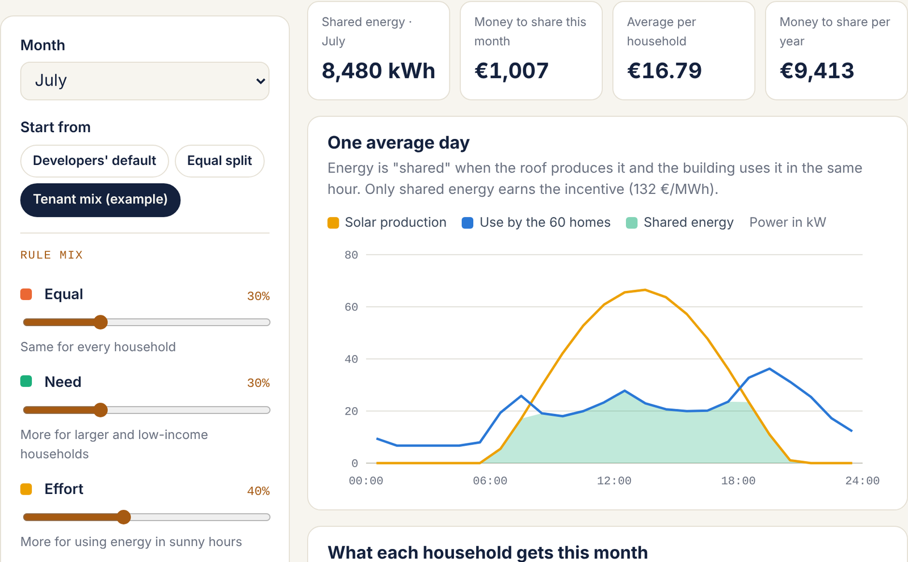

Hybrid Participation Innovation Lab · Step 8 · 24 November
Prototype: the Fair Share Simulator
A working tool that lets tenants try fairness rules on real-looking families before they vote
Next Wave
Mahsa Shahi · Kuhyar Saeedi · Farida Safdari · Gelila Tsehaye Melesse · Md Nazmul Islam · Pranto Argha Sarker
Deliverable F. The simulator is a usable web dashboard plus a paper version. It is live at kuhyar-saeedi.github.io/next-wave/simulator.html; slide 5 shows it.
What it is
Make the fairness choice tangible
The problem it solves
"Fair sharing" is abstract. Tenants can't vote on a formula they can't see working.
The simulator shows, family by family, what each rule would mean in euros.
How it works
1. Pick a sunny or cloudy month.
2. Mix the fairness rules with sliders.
3. See each household's share change live, and why.
Next Wave · Step 8 — Prototype
It uses simulated households and approximate solar figures, clearly labelled as such. It is a deliberation tool, not the final AI system.
The rules tenants can mix
Four ideas of what is fair
Equal
Every household gets the same amount.
Simple, but ignores need and effort.
Need
More for low-income or larger households.
Fights energy poverty, needs sensitive data.
Effort
More for those who use energy in sunny hours.
Raises the bonus, penalises shift workers.
Floor
A minimum guaranteed to everyone, whatever the mix.
Protects those who can't shift.
Tenants set the weight of each rule; the simulator shows the trade-offs. The final mix is decided at Gate 2.
Next Wave · Step 8 — Prototype
These are the options the tenant voices in Step 3 pointed to: equality, need (the unions), effort (the developers' logic) and protection (shift workers and the elderly).
Features
Built to be explained, not just used
Household cards
Six personas: a pensioner, a shift worker, a large family and more
Sun and demand view
A day chart: solar production against each family's use
Rule mixer
Sliders for equal, need, effort and the floor
"Why this amount?"
Each share broken down in plain words
Privacy switch
Shows what data each rule needs to work
Paper mode
Printable cards and tables for the table version
Next Wave · Step 8 — Prototype
The privacy switch makes a hidden trade-off visible: a need-based rule only works if the community knows income brackets, so fairness and privacy have to be discussed together.
Deliverable F · working prototype
Try it: the Fair Share Simulator

1 · Pick a month
See solar production, household use and the shared energy that earns the incentive.
2 · Mix the rules
Equal, Need, Effort and a Floor, or a preset: the developers' default or a tenant mix.
3 · Ask why
Every amount is explained in plain words, with the data each rule needs.
kuhyar-saeedi.github.io
/next-wave/simulator.html
Next Wave · Step 8 — Prototype: Fair Share Simulator
Demo this live if there is time: start from the developers' default (effort only), show the shift worker losing out, then switch to the tenant mix and show the floor protecting him. Numbers are illustrative: real CER tariff rules (DM 414/2023), a typical Rome solar yield, and six fictional household types.
How we would test it
Three tests with real participants
| Test | What participants do | What we measure |
|---|---|---|
| Understanding | Explain in their own words why a family got its amount | Share of correct explanations |
| Usability | Elderly and non-digital tenants use paper or screen with a facilitator | Tasks completed, help needed |
| Deliberation | The fairness assembly uses it to compare two rules | Did views change? Was the vote more informed? |
Before the real process, we can run a first test with classmates playing the household personas.
Next Wave · Step 8 — Prototype
A classroom role-play is an honest first test we can actually do before the exam: give each classmate a persona card and let them negotiate a rule with the simulator.
What testing teaches us
Questions the prototype answers
Which rule do tenants prefer?
And does the preference change once they see the effect on others?
Is the algorithm explainable?
If tenants can't explain it, the final AI must be simpler.
What data are tenants willing to share?
The answer shapes the data charter (Gate 3).
Does paper work as well as screen?
If not, the hybrid design needs more support.
Next Wave · Step 8 — Prototype
Each answer feeds back into a specific part of the design: the fairness rule, the AI's complexity, the data charter and the hybrid channels.